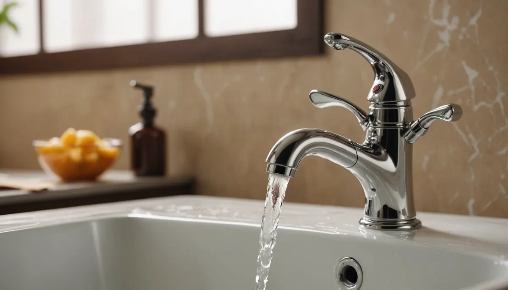
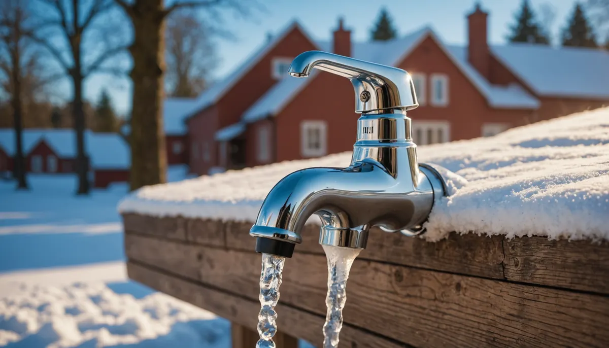

As we welcome the beautiful spring weather, many of us look forward to enjoying outdoor activities. However, after experiencing some cold winter days, it's crucial to ensure our outdoor spaces are prepared for the season. One key area to check is your exterior faucets. If they were exposed to freezing temperatures, you could face significant water damage inside your home. By taking a moment to inspect and take preventative measures, you can enjoy sunny days ahead without the worry of plumbing problems.
Inspection Checklist
Spring cleaning shouldn't stop at your home; it’s also the perfect time to review your outdoor plumbing. Here’s what to look for when inspecting your exterior faucets:
- Visible Cracks or Bulges: Carefully examine the faucet and any exposed pipes for signs of damage. Even minor cracks can become major issues as the temperature rises. For instance, a small crack could lead to up to 250 gallons of water leaking over a month.
- Leaks: Turn on each faucet and check for leaks around the faucet itself or at the entry point of the pipe into your home. A leaking faucet may signal underlying issues. In fact, repairing a leaky faucet can save you about 10% on your water bill.
- Reduced Water Flow: If the water flow is weak, it may indicate a blockage or a burst pipe. This is a crucial sign that shouldn’t be ignored, as a blockage can lead to a complete standstill and costly repairs later.
- Dampness or Water Pooling: Inspect the ground around the faucet and inside the wall where the pipe enters your home. Any signs of moisture can indicate hidden leaks needing prompt attention. Remember, 10% of the average home's water use can be attributed to leaks.

What to do if you find any signs of damage
Taking swift action if you discover any issues during your inspection is essential. Here’s what you should do:
- Turn off the Water Supply: Immediately shut off the water supply to the affected faucet. This quick step can help prevent further damage to the faucet and your home's interior.
- Contact a Professional: Reach out to Angle Stop Plumbing to assess and repair the damage. Professional help ensures repairs are done correctly, preventing future plumbing headaches.
Preventative Measures
Implementing preventative measures now can save you time, money, and stress later. Here are some straightforward ways to protect your exterior faucets:
- Insulate Your Outdoor Faucets: Use faucet covers or wrap them with towels before freezing temperatures hit. This simple step can significantly reduce the risk of damage.
- Drain Your Outdoor Faucets: Shut off the water supply to the outdoor faucets and drain any remaining water from the pipes. This reduces the chance of freezing during colder months and potential ruptures known to cause water waste.
- Disconnect Garden Hoses: Make sure all hoses are disconnected. Water left inside hoses can freeze, leading to backup issues and damage to both hoses and faucets. It’s a simple habit, but missing it can lead to hefty repair bills.

Taking these proactive steps now will protect your home from water issues and allow you to enjoy a stress-free spring and summer.
Embrace Spring with Confidence
As the weather warms up and we spend more time outdoors, it’s vital to prepare our homes for the new season. Ensuring your exterior faucets are in good condition can prevent headaches and costly water damage in the future.
Take the time to inspect your outdoor plumbing, address any potential issues, and implement preventative measures. By doing so, you’ll welcome spring confidently and enjoy everything nature has to offer.
If you have any questions or need assistance, please contact Angle Stop Plumbing at (615) 398-3048 or email us at sales@AngleStopPlumbing.com. Here’s to a fantastic and stress-free spring!